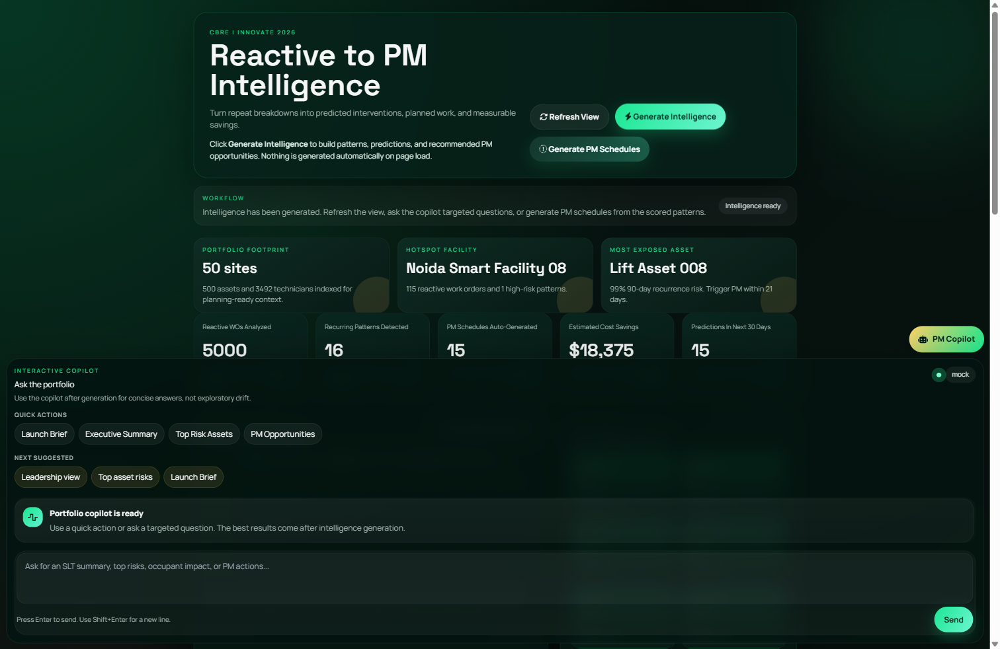
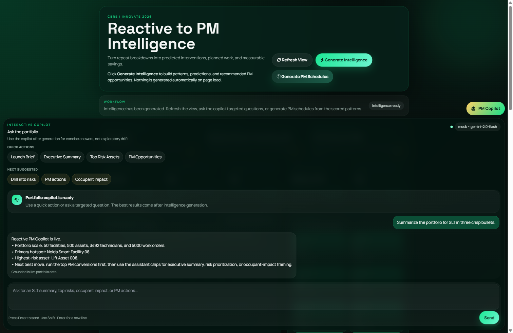
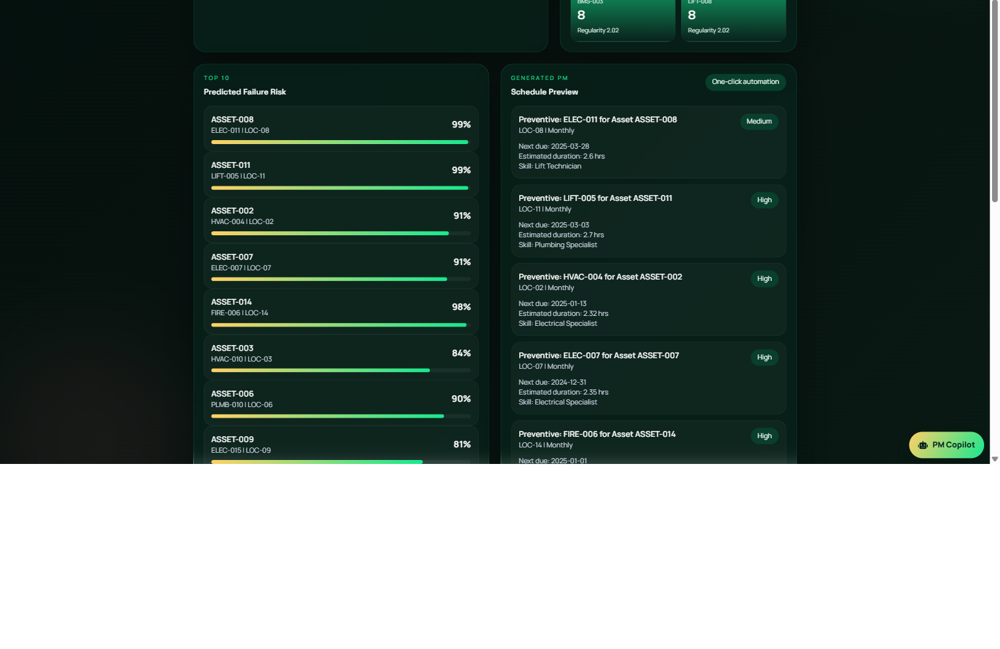

CBRE | INNOVATE 2026 | SLT Narrative
From Reactive Drag To Predictive Operating Leverage
Reactive to PM Intelligence transforms maintenance history into ranked PM opportunities, explainable risk, and a cleaner operating rhythm for facilities leadership.
Executive Thesis
Use the data already sitting in CAFM to stop paying twice for the same failure.
Historical breakdowns -> recurrence intelligence -> PM conversion -> lower reactive spend + better uptime + stronger tenant trust
Pilot Signal
Business Problem
Too Much Of The Maintenance Budget Is Still Paying For Yesterday's Failure Pattern
Repeat failures are operational debt
The same assets fail with familiar signatures, but that knowledge stays buried in ticket history instead of surfacing as planned action.
Reactive response destroys leverage
Technicians burn time on urgent repeat work, planners stay trapped in backlog triage, and account teams lose visibility into what is actually preventable.
Leadership sees cost, not pattern intelligence
Without explainable recurrence scoring, it is difficult to justify where to intervene first, what to automate, and how to quantify the value case.
Cost Pressure
Reactive work consumes margin
Emergency labor, repeat dispatches, and visible downtime all compound account pressure.
Service Pressure
Tenant-facing systems are exposed
HVAC, electrical, plumbing, and lift issues are exactly where repeat failure is most painful.
Decision Pressure
Planners need a ranked backlog
Without prioritization, PM remains calendar-driven instead of intelligence-driven.
Approach Used
We Built A Low-Regret Intelligence Layer, Not A Rip-And-Replace Story
The solution overlays existing work-order history, detects repeat-failure signatures, scores recurrence, and converts high-risk patterns into PM action with explainable context.
Detection
Regularity Score
Repeatability is quantified using interval behavior rather than intuition alone.
Prediction
30 / 60 / 90 Day Risk
Random Forest scoring surfaces what is likely to fail again soon.
Action
One-Click PM Conversion
The system converts high-risk patterns into planning-ready PM schedules.
Strategic Positioning
This is a capital-light transformation move: mine more value from existing CAFM history before expanding platform complexity.
Live Product View
The Portfolio Command Layer Is Already Working End To End
- Portfolio scale, hotspot facility, and most exposed asset are visible immediately after generation.
- The dashboard exposes the exact bridge SLT needs: from operational signal to financial and planning implication.
- Nothing is auto-generated on page load, which keeps the story intentional, controlled, and demo-safe.


Executive Copilot
Leadership Questions Can Be Answered In The Language Of Risk, Savings, And Next Action
- The assistant is grounded in live portfolio context, not generic model chatter.
- Quick actions keep the flow executive-friendly: launch brief, top risk assets, PM opportunities, occupant impact.
- Provider abstraction supports deterministic demo mode today and live Gemini, Mistral, or OpenAI integration when required.
Operational Proof
Risk Prioritization And PM Automation Sit Side By Side
- The same screen shows top predicted failure risk and the PM schedules generated from that insight.
- This closes the value loop from analytics to action, which is where many pilot concepts fail.
- The UI is already structured to support planner decisioning, not just executive show-and-tell.

Architecture
Modular By Design, Scalable By Intention
Source
CAFM-like work orders
CSV, exports, or service feeds act as the operational source of truth.
Core Data
SQLite pilot store
Facilities, assets, technicians, work orders, patterns, predictions, and PM schedules.
Analytics
Pattern + prediction engines
Regularity scoring, Random Forest risk, and explainable recurrence output.
Action
PM generator
Converts high-risk patterns into planning-ready schedules with due date and skill context.
Experience
FastAPI + dashboard + deck
Operational API surface, live dashboard, PM Copilot, and executive narrative assets.
API Layer
Protected routes
Auth, pipeline run, KPI, portfolio, assistant, PM schedules, and health endpoints.
Control Layer
Rate limit + validation
Pydantic request contracts, token auth, and pilot-safe throttling controls.
Ops Layer
Startup + scheduler
Automatic sample ingestion and repeatable analytics orchestration.
Migration Path
SQLite to PostgreSQL
The current stack is intentionally easy to harden without rewriting the business logic.
ROI And Business Benefit
The Value Case Is Not Just Technical. It Is Commercially Legible.
Target reactive reduction
Used in the pilot cost-savings framing and aligned to PM conversion opportunity.
Technician leverage upside
More planned work means less time consumed by familiar emergency loops.
PM actions created now
The current run already produces a prioritized intervention list instead of a theoretical model output.
Scale-ready savings pathway
Once calibrated with live-account economics, the same pattern can support materially larger portfolio savings.
Value Logic
Every recurring failure converted into planned work can remove a future emergency event, protect uptime, and release specialist capacity back into higher-value tasks.
Avoided repeat failure x emergency cost delta x conversion success rate -> savings pool + service stability + planner confidence
Trade-Offs
Built For Fast Business Proof First, With A Clear Production Hardening Path
Why This Is Strong Now
Speed, clarity, and end-to-end credibility
- Live application already runs from data generation through PM output.
- Assistant, dashboard, and deck tell one consistent operational story.
- The architecture is modular enough to scale without a re-platforming reset.
What Still Needs Enterprise Hardening
Governance and operating controls
- SQLite should move to PostgreSQL for concurrent enterprise workloads.
- Model labels should transition from heuristic to outcome-derived learning.
- PM publication should add approval workflow, audit lineage, and model version controls.
Roadmap
Pilot First. Production Fast. Scale With Governance.
Phase 1
Pilot validation
Map one live account, validate hotspot precision with SMEs, and quantify PM conversion value.
Phase 2
Production foundation
Introduce PostgreSQL, stronger secrets handling, monitoring, and live CAFM connectivity.
Phase 3
Multi-site scaling
Add worker jobs, caching, multi-tenant patterns, and safer concurrent portfolio use.
Phase 4
Closed-loop intelligence
Use PM outcomes, IoT, and BMS signals to continuously improve recurrence scoring and action quality.
Recommended Ask
Approve The Next Step Before The Same Failure Patterns Consume Another Quarter
Expand into a live-account pilot
Use one production-like account to validate recurrence precision, PM conversion yield, and stakeholder trust.
Fund enterprise hardening
Shift persistence, observability, and workflow governance from pilot-grade to production-safe controls.
Connect to live CAFM interfaces
Turn the current one-click PM output into a governed downstream operating workflow.
Final Message
This is a practical AI story with operating substance: the product already proves that maintenance history can be converted into explainable, prioritized, and action-ready PM intelligence.
Reactive to PM Intelligence | SMART PM CONFIGURERS | Built for SLT conversation, pilot activation, and production scale-up.